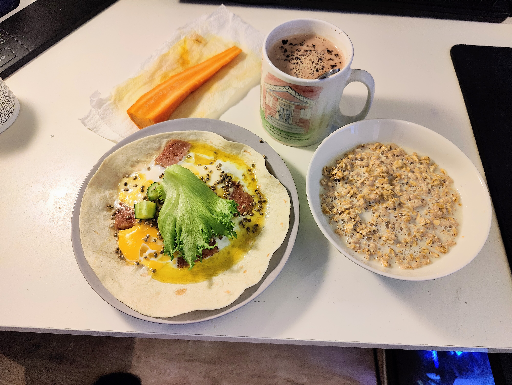
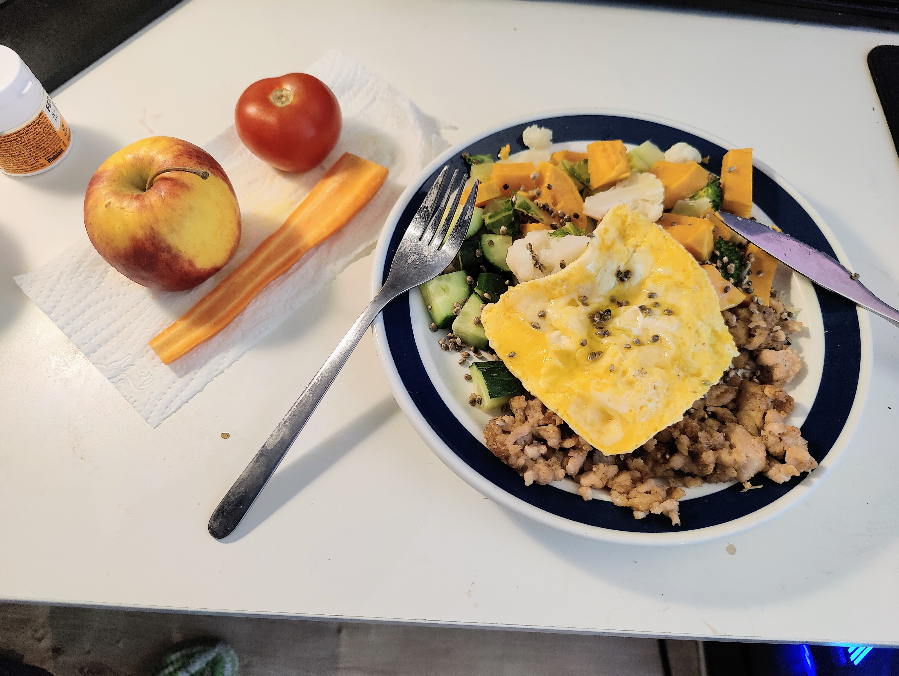
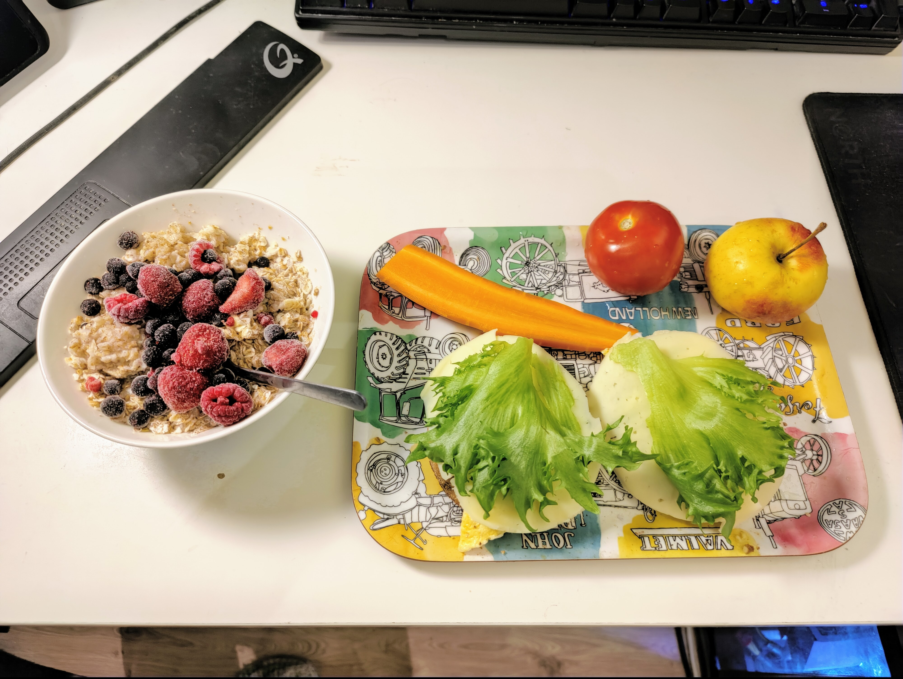
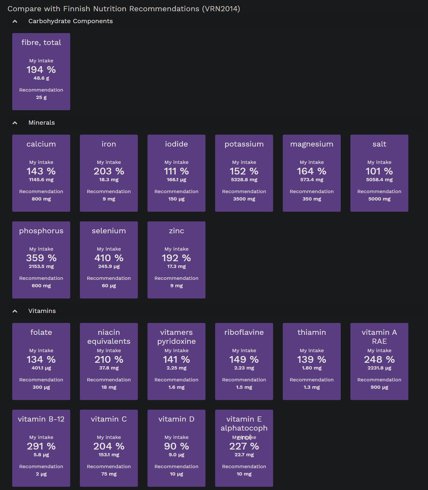

Food
Total: 2580 kcal for 32-year-old 62kg very active man.
10am Breakfast

| Food | Mass (g) | Energy (kcal) |
|---|---|---|
| Wheat Tortilla | 63 | 191 |
| Pork And Beef, Canned | 80 | 202 |
| Egg, Boiled | 55 | 74 |
| Cucumber | 40 | 5 |
| Garden Lettuce | 40 | 5 |
| Hemp Seed, Whole | 5 | 23 |
| Olive Oil | 14 | 120 |
| Cocoa, Hot Chocolate, Low-Fat Milk, Unsweetened | 250 | 138 |
| Muesli, No Added Sugar | 40 | 141 |
| Oat Drink Without Milk, Average Of Industrial Products | 150 | 68 |
| Carrot | 35 | 11 |
| Total | 976 |
12pm Lunch

| Food | Mass (g) | Energy (kcal) |
|---|---|---|
| Chicken Mince, Fried | 100 | 236 |
| Sweet Potato, Without Skin, Boiled, Without Salt | 100 | 81 |
| Cauliflower, Boiled Without Salt | 50 | 12 |
| Cucumber | 80 | 9 |
| Hemp Seed, Whole | 10 | 45 |
| Olive Oil | 27 | 239 |
| Broccoli, Boiled Without Salt | 25 | 9 |
| Apple, Domestic, With Skin | 185 | 65 |
| Carrot | 35 | 11 |
| Tomato | 75 | 17 |
| Nut Mix, Without Salt | 20 | 127 |
| Total | 852 |
4pm Dinner

| Food | Mass (g) | Energy (kcal) |
|---|---|---|
| Crispbread, Multigrain, Sesame Seeds, Vaasan Pieni Pyöreä | 28 | 98 |
| Margarine 60%, Keiju Alentaja | 14 | 74 |
| Egg, Boiled | 55 | 74 |
| Cucumber | 80 | 9 |
| Cheese, Oltermanni Rypsi, Rapseed Oil, 24% Fat | 16 | 51 |
| Garden Lettuce | 40 | 5 |
| 4-Grain Flakes | 25 | 84 |
| Water, Tap Water | 100 | 0 |
| Oat Drink Without Milk, Average Of Industrial Products | 100 | 45 |
| Blueberry | 60 | 37 |
| Strawberry | 60 | 27 |
| Raspberry | 60 | 29 |
| Carrot | 35 | 11 |
| Tomato | 75 | 17 |
| Apple, Domestic, With Skin | 185 | 65 |
| Nut Mix, Without Salt | 20 | 127 |
| Total | 752 |
Fineli

